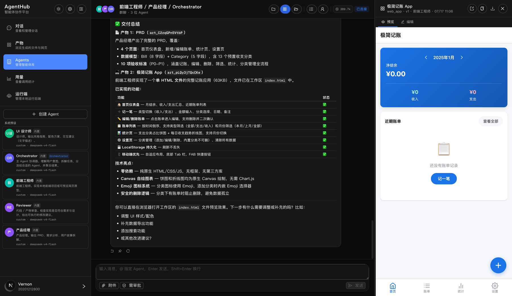
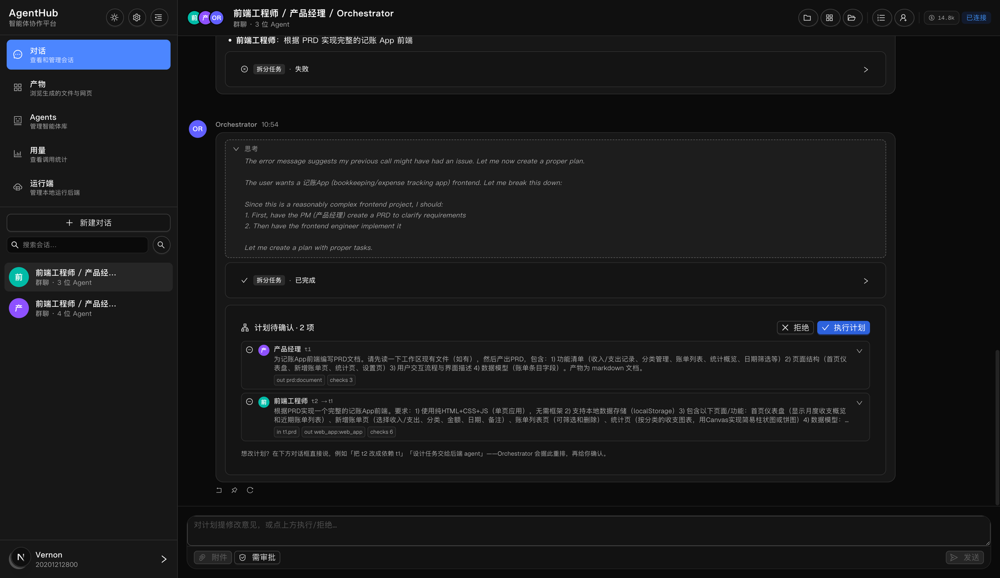
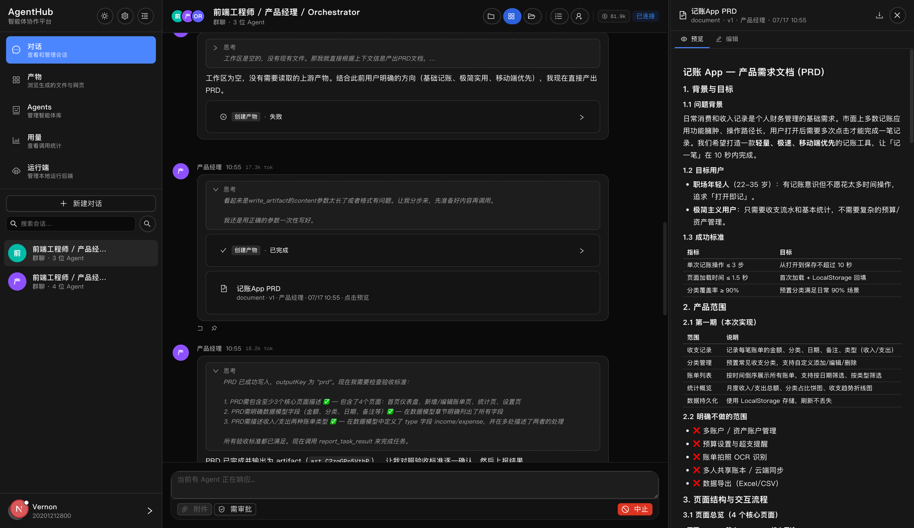
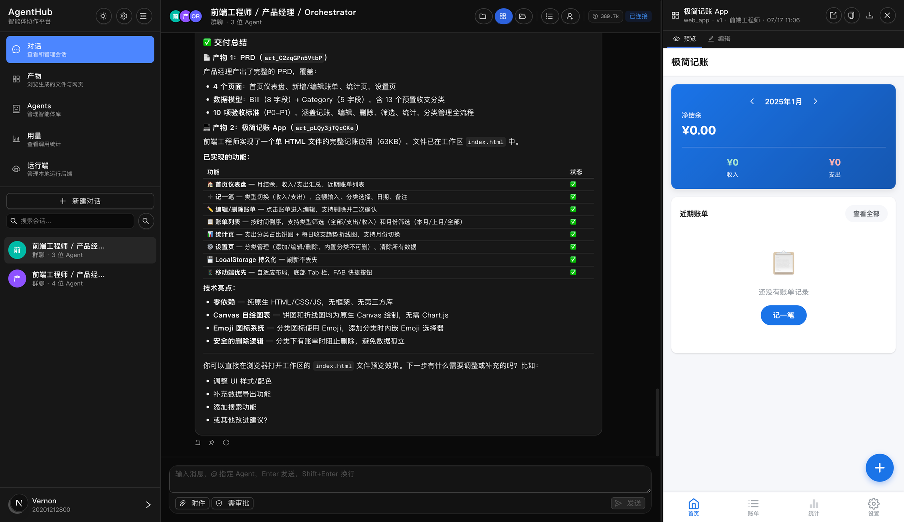
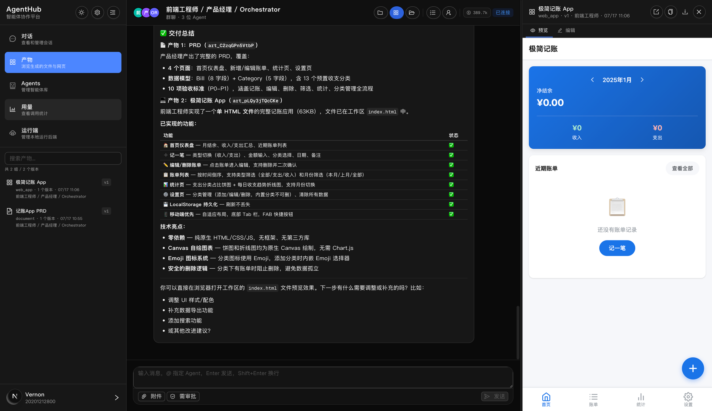
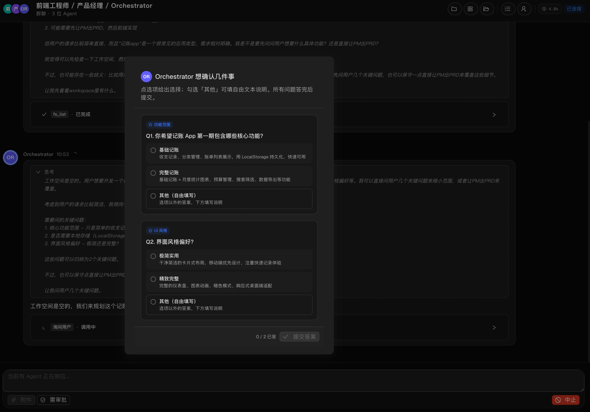

多智能体系统
有效性边界与工程实践
When They Work, Why They Fail, and How to Build Them
同一周，两种答案
《不要构建多智能体》
多智能体研究系统
今天怎么讲
不咬文嚼字——概念不清，规则就写不出来。
后面才不打架
工作流 Workflow
AI 按流程图走。像工厂流水线：每个工位干什么，是规定好的。
智能体 Agent
自己决定下一步、用什么工具，干到完成为止。像能独立接单的员工：交代目标，他自己想办法。
多智能体系统 MAS
多个"员工"协同干活，加一套协作机制。像一个项目组。
三个硬伤，都是结构问题
长任务跑到后半段"失忆"、答非所问——根源在这里，换更强的模型也治不好上下文爆炸
职责混乱
无法并发
复杂度的五个台阶
链式
固定几步一步一步来。先写提纲，检查，再写正文。
路由
先分类再分发。简单问题给小模型，省钱。
并行
互不干扰的事同时做，最后汇总。三个"审查员"各查一个方面。
指挥-工人
总指挥现场拆活、派活、汇总。改哪几个文件，看了需求才知道。
生成-评审
一个写、一个挑错，改到通过为止。翻译、写方案。
四组一手材料：好处多大 · 翻车长什么样 · 边界在哪 · 为什么翻车。
下限靠设计
14 种翻车方式，3 大类
系统设计缺陷
- 不按要求做
- 忘了自己是谁
- 重复劳动
- 聊着聊着忘了前文
- 不知道何时该停
协作失调
- 有疑问不问
- 干着干着跑偏
- 发现重要信息不告诉队友
- 无视队友的结论
- 说一套做一套
缺少验收
- 没做完就交差
- 交差不检查
- 检查本身查错了
架构选错，比不做更糟
目前最系统的对照实验：其他条件全部统一，只看架构差异为什么会翻车：两条原则
案例：把"做 Flappy Bird"拆给两个子 Agent
画成了马里奥风
根本不像游戏素材
信息要传完整的记录，不是转述几句话。 只告诉同事"做个背景"，他当然按自己的想象做。
每个行动背后都有没明说的决定。 所以 Cognition 建议：默认单干按顺序来；活太长就把"之前做过的决定"压缩传递下去。
每件事两遍讲：先看论文怎么说，再看我们怎么落地。
分工结构：三条路线
中心化
Anthropic · OpenAI Manager · AgentHub一个"总指挥"统一拆活、派活、收结果。好管理、好验收；总指挥是瓶颈。
去中心化
客服"转接"模式几个 AI 平级，谁擅长谁接。对话场景自然；转接条件写不好会来回踢皮球。
混合
Claude Code · 大型团队总指挥管大方向，小组内部自治。适合大团队；层级多了会慢。

派活必须说清四件事
Anthropic 的反例：只说"研究一下半导体短缺"→ 两个子 Agent 重复查今年的供应链，一个跑去看 2021 年旧闻批准前无动作：机制上掐断，不靠自觉

计划生成后先停下来等人确认——任务卡带产出要求、依赖关系、验收条件，拒绝或执行在人手里。
AI 生成的派工单，系统用代码逐条校验：编号唯一 · 不自依赖 · 无循环依赖 · 执行人在场。 规则都不复杂，但少一条，执行阶段就会用更贵的方式爆掉。
子 Agent 上岗前的"入职简报"
收到的不是群聊全部历史——每条规则都是踩坑踩出来的消息只留最近 5 条 + 置顶
再多就是干扰。
依赖链上的上游产物 → 给摘要，全文随取
专防"发现重要信息不告诉队友"；全文塞进简报会把工作记忆撑爆——需要全文自己调工具取。
其它产物 → 只给标题
知道存在就行，要用再取。裁的是噪音，不是决定——上游产物和关键决定全文随取随有。
协议分层：连工具 · 连 AI · 连人
不用给他看账本
所有 Agent 实时状态
"做完了"三个字不算数

状态写"完成"且验收条件逐条通过，才算完成；没填单、报失败、任何一条没过——一律按失败处理。 截图：产品经理产出 PRD 后，逐条核对验收标准，全部打勾才上报。
没有这张单子，总指挥汇总的就是一堆半成品。验收只看最终结果对不对，不纠结过程。
演示能跑，和敢让它碰生产数据，中间隔着这一章。
一个生产级系统的完整链路
主研究员定策略
计划写到外部存储，防工作记忆超限丢失
派子 Agent 分头搜
典型 3-5 个，超复杂可到 10 个以上
智能过滤器
边搜边评估质量，只把精华带回来
汇总，不够再派人
主研究员判断材料是否充分
独立引用核查员
逐条核对出处，独立于写报告的人
带来源的报告
输出标注来源，可追溯
四个上线级挑战
01小错会滚雪球
连着几十步，一步错后面全歪 → 断点续跑 + 存档点；还有招反直觉的：告诉 AI"这工具坏了"，让它自己绕过去。
02老办法调不了新问题
同样指令每次表现可能不同 → 全程留痕 tracing：记"做了什么决定"，不记聊天内容——能排查又保护隐私。
03不能停机升级
系统里随时有正在跑的任务 → 彩虹部署：新旧版本同时跑，流量慢慢切。
04排队等待有瓶颈
总指挥等一拨人全干完才能继续 → 方向是异步执行，协调难度更大，是行业下一块硬骨头。
成本：设计阶段摆上桌面

五个坑（上）
AI 派单会漏写依赖关系
提示词反复强调没用——不是态度问题，是生成的不确定性。解法：确定性代码兜底，从任务顺序和文本信号自动补全。认知：AI 的输出永远当草稿，不当真相。
规定了格式，AI 照样写歪
有时这种结构、有时那种、有时干脆裸文本。解法：入口做兼容，几种形态都接受、自动归一。认知：对 AI 的输入容错要比对人更宽——宽进严出。
并行改同一个文件，只能提醒不能代劳
系统检测并报告冲突，但不自动合并——合错了比冲突更难查。认知：先让它可见。可见的问题人能处理，看不见的问题才是事故。

五个坑（下）
"我做完了"没有意义
早期子 Agent 说一句完成，总指挥就采信，汇总频繁拿到半成品。加上完工单 + 逐条验收后彻底改变。认知：验收标准不是流程装饰，是协作协议的一部分。
审批不是在界面上加个按钮
第一版就是个确认框，拦不住：用户还没看完计划，执行消息已经刷出来了。真解法在机制层：系统看到"派单"动作，直接停止接收后续输出。认知：留人把关是架构属性，不是界面属性。

文献说 ↔ 我们验证到
| 文献说 | 我们验证到 |
|---|---|
| 派活要给明确边界 | 派工单里的产出要求、依赖字段，就是边界的具体形态 |
| "信息截留"是高频翻车 | 简报里只注入依赖链上的上游产物 |
| 独立检查抑制错误传播 | 完工单 + 逐条验收，前置把关 |
| 协调有开销 | 并行上限实测到 4，再大反而慢 |
| 成本要可计量 | 输入 / 输出 / 缓存分开记账，红线才检查得了 |
框架会洗牌，协议和方法才是长期资产
| 框架 | 适合谁 |
|---|---|
| LangGraph | 流程图式编排，生态最大——要精细控制流程的团队 |
| CrewAI | 角色扮演式，上手快——快速验证想法 |
| OpenAI Agents SDK / Google ADK | 各自生态，ADK 与 A2A 原生集成 |
| Microsoft Agent Framework | 两老牌框架合并，2026-04 正式版——.NET/Python 企业级 |
| AgentScope（阿里开源） | Java，企业级扩展——Java 技术栈 |
先用原始接口把模式自己写一遍（很多几十行代码），先把单个 Agent 调到位，撞到结构墙再考虑组队。
浦发 2500+ 智能体、农行"一明"协同。红线做法：资金路径中心化 + 人工审批 + 防重；后台先行、面客审慎；事件溯源，每步可审计。
四步判断法：该不该组队
单干榨干了吗
没撞墙别组队。撞墙信号：提示词里全是分支；工具职责重叠（15 个清晰可控，10 个重叠失控）
活能拆开吗
几部分互不干扰、能同时干才值得拆；环环相扣就留在单线程
门槛过了吗
单干成功率先到 80%；组队完成率至少高 5 个点；成本红线按场景定（文献 3-4 倍，我们有缓存定 2 倍内）
验收进架构了吗
独立检查、写评分离，从第一天就放进去